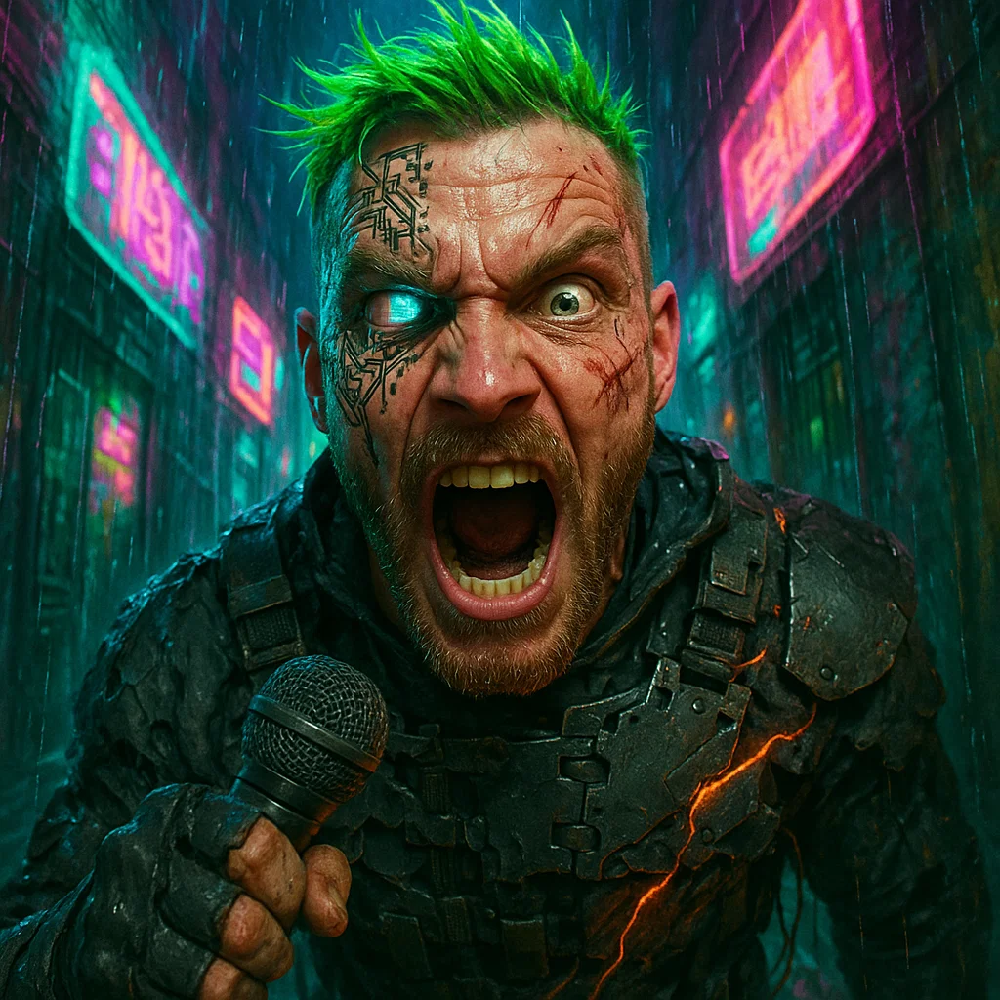
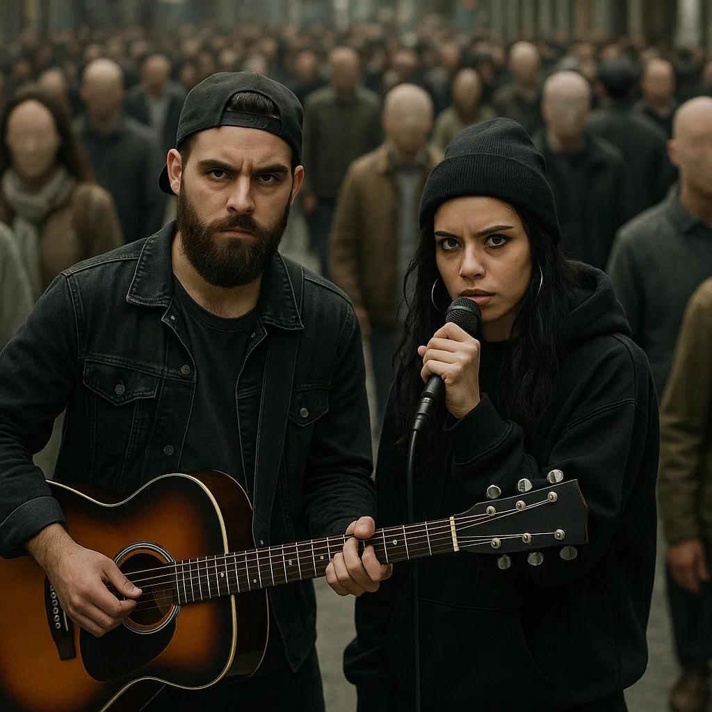
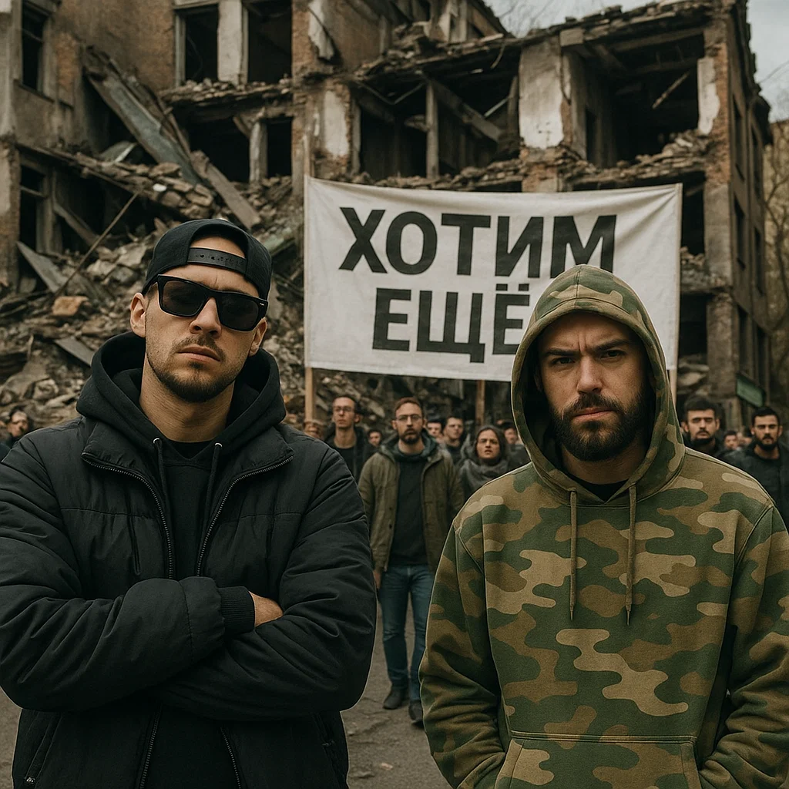
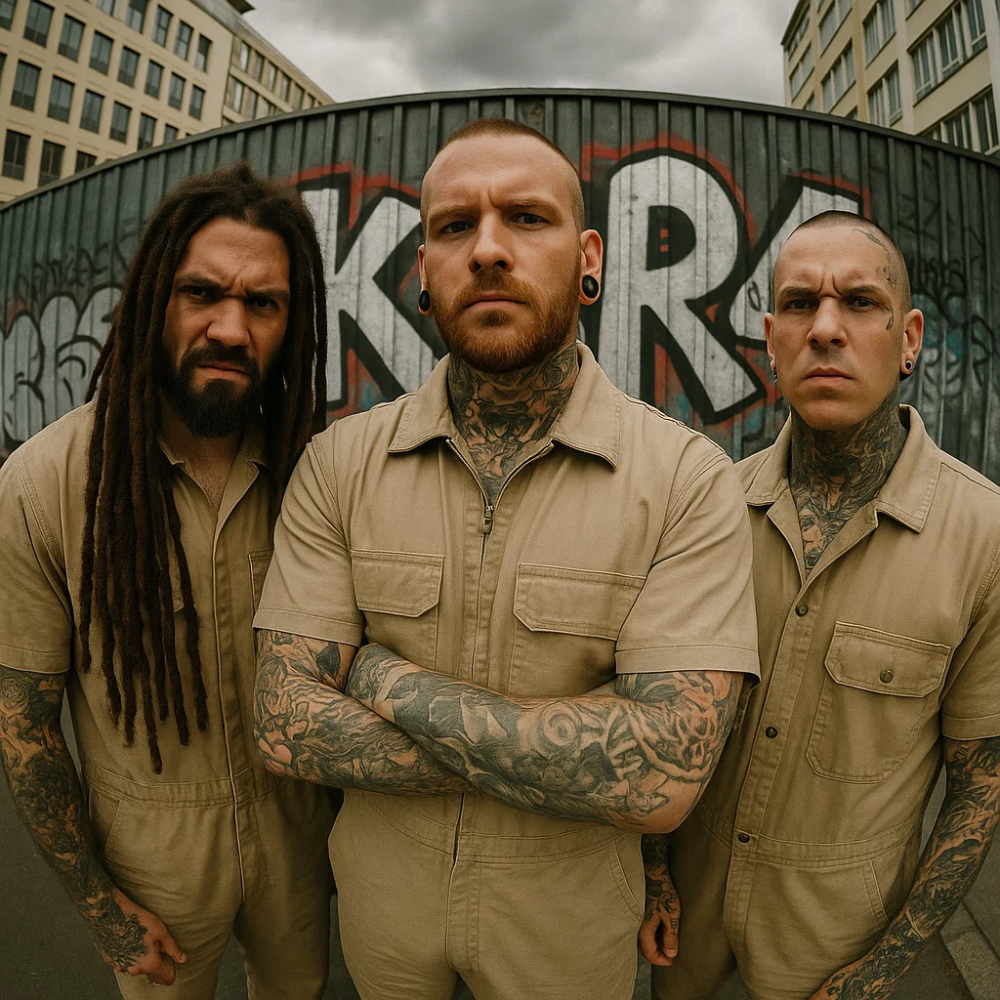

Sarcastic and philosophical hip-hop.
Break-electro-punk-inverted-cyber-hip-hop.
The blend of experimental hip-hop and riffs.
A fusion of noir trap and digital decadence.
Satirical rap dismantling social pretenses.
Experimental metal with no fucking frames.
Reggae-trap-industrial chaos with Balkan soul.